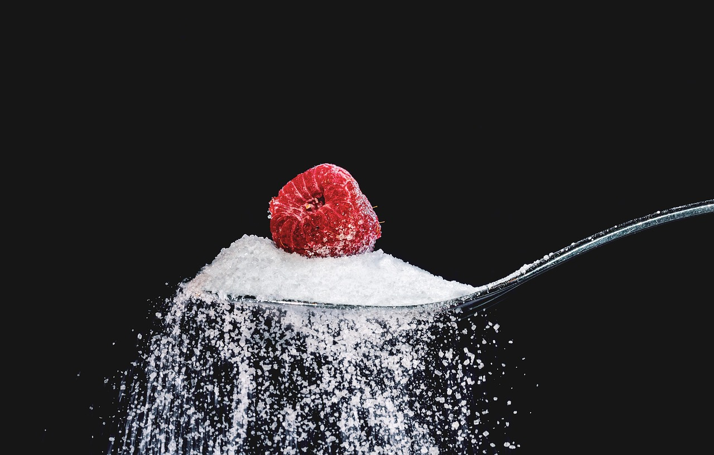
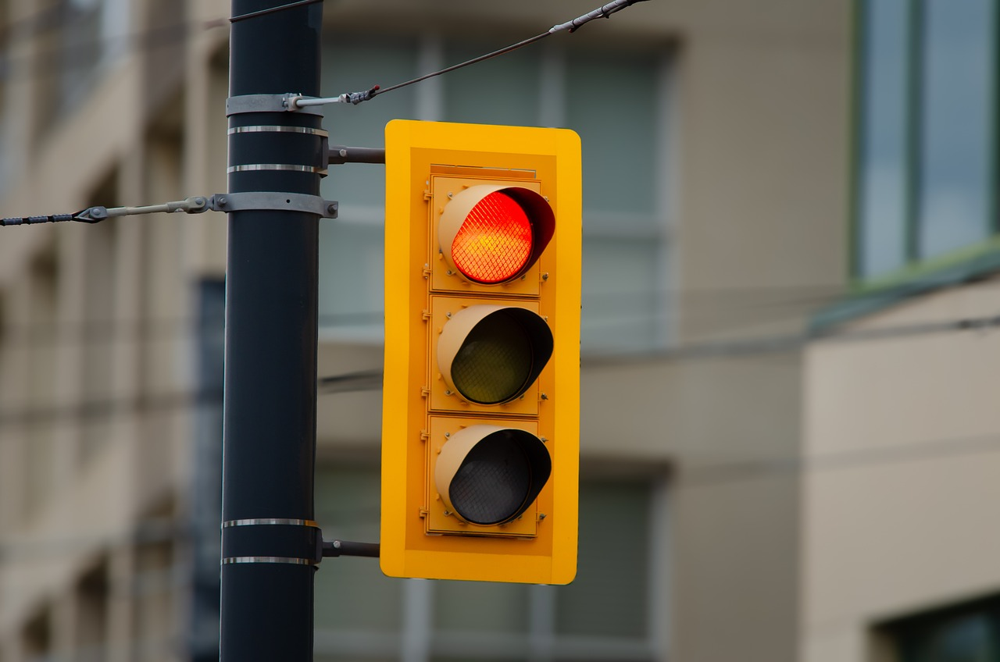
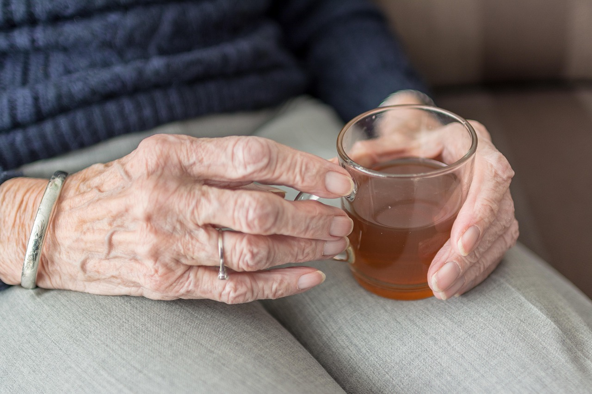
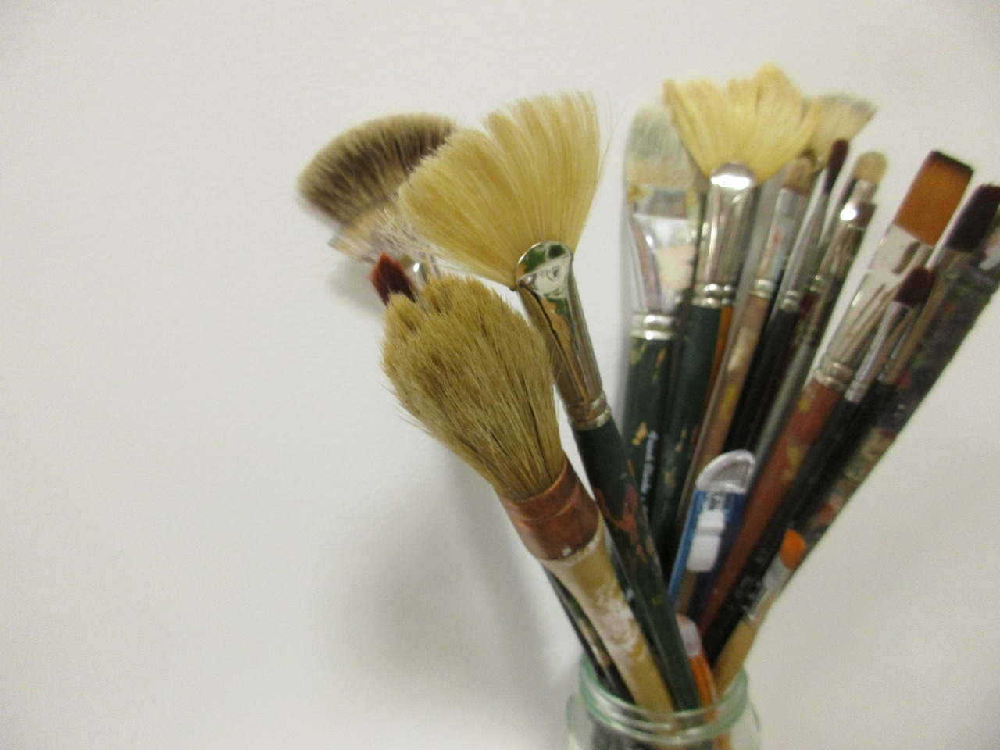

I — Meringue01 / 05
Meringue
A pastry chef tangling with the business and the beauty of making cakes. Even the smallest touch — setting a raspberry on meringue — carries meaning.

I — MeringueA pastry chef tangling with the business and the beauty of making cakes. Even the smallest touch — setting a raspberry on meringue — carries meaning.
A garbage man's keen eye watches a woman select objects from trash cans on his route. In her hands, he sees a broken picture frame become a relic.

III — IntersectionAt a red light, a delivery driver realizes how much he learned from watching others, yet knows his knowledge will be erased.

IV — WaterHe sees her grasping to dignity in her pursed lips, deciding whether to take a sip.

V — CanvasShe is pulled by doubts, fears and distractions, but the strongest pull was always toward the paint.
These are the credentials that don't fit on a page — knowledge gathered from pauses, glances, and the pull toward what matters.
This work is also in a conversation with AI.
Exhibit II — What if we Shared our Shadow Resume with AI? →PHI · Portraits of Human Intelligence · © 2026, Jo Esterly